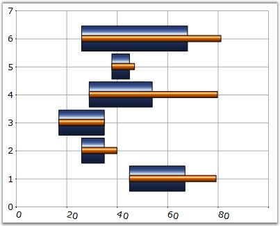
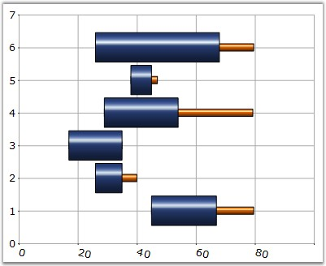
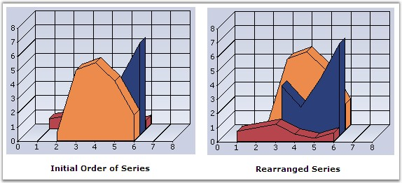

Specifies the order in which the objects are arranged and controls the visibility when one is placed over the other.
By default, the ZOrder for series are assigned based on the order in which they are added to the Series collection.
|
Details | |
|
Possible Values |
Any integer value |
|
Default Value |
The order that we add the series in the chart control. |
|
2D / 3D Limitations |
No |
|
Applies to Chart Element |
Any Series |
|
Applies to Chart Types |
Gantt Chart, Histogram chart, Tornado Chart, Combination Chart, Box and Whisker Chart, Area Charts,Polar And Radar Chart, BarCharts, Column Charts, Bubble Charts, Candle Charts, Hilo Charts, Hilo Open Close Chart |
Here is sample code snippet using ZOrder.
|
[C#]
this.chartControl1.Series[0].ZOrder = 0; this.chartControl1.Series[1].ZOrder = 1; |
|
[VB.NET]
Private Me.chartControl1.Series(0).ZOrder = 0 Private Me.chartControl1.Series(1).ZOrder = 1 |

Figure 233: Series 1 ZOrder = 0, Series 2 ZOrder = 1

Figure 234: Series 1 ZOrder = 1, Series 2 ZOrder = 0
Rearranging the Series using ZOrder property
The chart series can be rearranged at run-time using ZOrder
property as follows. The chart needs to be redrawn in order to reflect ZOrder
property changes. we cannot call redrawing for every series ZOrder changes. In
order to overcome this, we should change the order of the series in between the
begin update and end update statements as follows.
|
[C#]
this.chartControl1.BeginUpdate(); this.chartControl1.Model.Series[0].ZOrder = 2; this.chartControl1.Model.Series[1].ZOrder = 1; this.chartControl1.Model.Series[2].ZOrder = 0; this.chartControl1.EndUpdate(); |
|
[VB.NET]
Me.chartControl1.BeginUpdate() Me.chartControl1.Model.Series[0].ZOrder = 2 Me.chartControl1.Model.Series[1].ZOrder = 1 Me.chartControl1.Model.Series[2].ZOrder = 0 Me.chartControl1.EndUpdate() |

Figure 235: Chart with Rearranged Series
See Also
Gantt Chart, Histogram chart, Tornado Chart, Combination Chart, Box and Whisker Chart, Area Charts,Polar And Radar Chart, BarCharts, Column Charts, Bubble Charts, Candle Charts, Hilo Charts, Hilo Open Close Chart